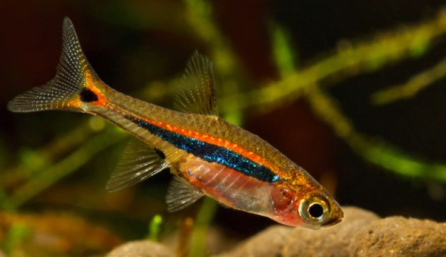

Systématique
- Ordre : Cypriniformes
- Famille : Danionidae
- Genre : Boraras
- Espèce : B. urophthalmoides
- Syn. : Rasbora urophthalmoides

Boraras urophthalmoides, souvent appelé Rasbora point d'exclamation ou Rasbora moineau, est un poisson minuscule originaire d'Asie du Sud-Est, décrit par Kottelat en 1991.
C'est potentiellement la plus petite espèce du genre, ne dépassant guère 1,2 à 1,5 cm (les femelles étant légèrement plus grandes). Il se distingue par un motif très spécifique : une ligne latérale sombre discontinue, suivie d'un point noir à la base de la queue, l'ensemble rappelant un point d'exclamation.
Contrairement à B. brigittae avec lequel il est souvent confondu, son corps n'est pas rouge. Il présente une couleur de fond pâle (orange clair à beige), surmontée d'une bande dorée ou orange vif très lumineuse juste au-dessus de la ligne noire.
C'est un poisson de banc extrêmement sociable et pacifique. Il doit impérativement être maintenu en groupe d'au moins 10 à 15 individus.
Il est parfait pour les nano-aquariums densément plantés. Très timide, il a besoin de nombreuses cachettes et d'une lumière tamisée (plantes flottantes) pour montrer ses reflets dorés. Il cohabite très bien avec les crevettes naines.
Mode : ovipare (diffuseur d'œufs).
La reproduction est continue mais les œufs sont minuscules et très peu nombreux. Les parents pondent parmi la végétation fine (mousse de Java).
Bien que les adultes ne soient pas de grands prédateurs, les alevins sont si petits qu'ils sont difficiles à élever en bac communautaire. Ils nécessitent une micro-faune abondante (infusoires) dès l'éclosion.
Dimorphisme sexuel : Les mâles sont plus sveltes et présentent des reflets orange/cuivrés plus intenses au-dessus de la ligne noire, ainsi que des pointes de couleur sur les nageoires dorsale et anale. Les femelles sont nettement plus rondes, surtout en période de reproduction, et plus pâles.
Espérance de vie : Environ 3 à 5 ans.
Il est originaire du bassin du Mékong (Vietnam, Cambodge) et de Thaïlande (bassin du Chao Phraya).
Il habite les marais, les zones inondées et les rizières où l'eau est stagnante, riche en végétation aquatique et souvent pauvre en oxygène. Il préfère les eaux douces et acides, bien qu'il soit un peu plus tolérant que B. brigittae.
Répartition

Origine naturelle :
- Asie du Sud-Est.
- Thaïlande.
- Vietnam.
- Cambodge.
Paramètres de maintenance
Température : 22 à 28 °C.
pH : 6,0 à 7,0 (tolère jusqu'à 7.5, mais préfère l'acide).
GH : 2 à 12 °dGH.
Volume conseillé : Minimum 20 à 30 L. Idéal pour les petits volumes (nano-cubes) bien plantés.
Régime alimentaire
Régime : carnivore / insectivore (micro-prédateur).
Dans la nature, il se nourrit de zooplancton.
Sa bouche est minuscule. Il nécessite une nourriture très fine : nauplies d'artémias, micro-vers, cyclops congelés et nourriture sèche en poudre pour alevins.